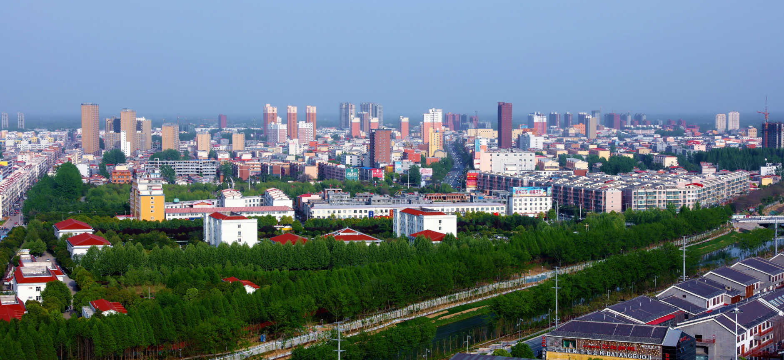
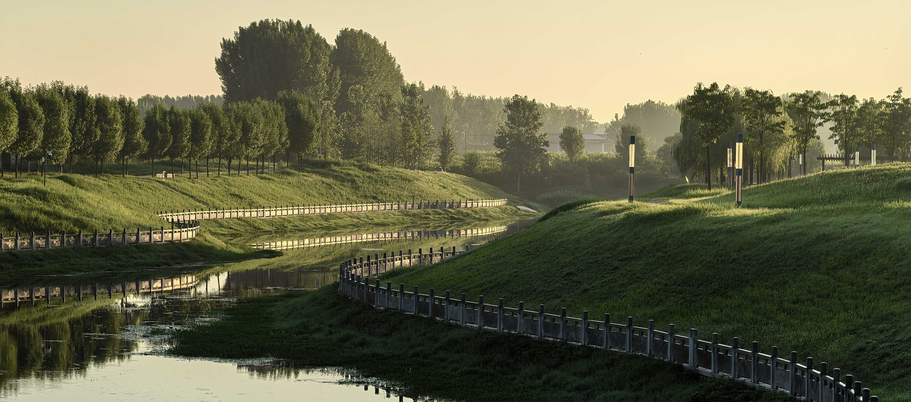
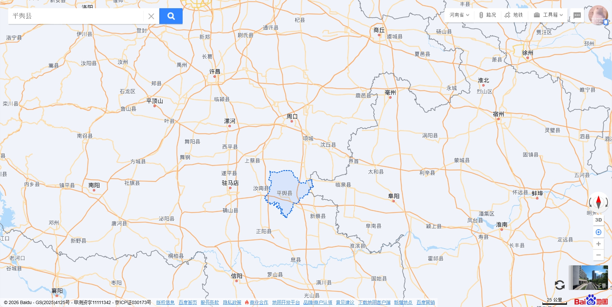

平舆县 - 河南省东南部宜居之城

中国白芝麻之乡 - 优质白芝麻产区

城市绿肺 - 清河公园生态美景
←
关于平舆
平舆县位于河南省东南部，隶属驻马店市，地处黄淮平原腹地，总面积1282平方公里，辖19个乡镇（街道），总人口99万。平舆历史悠久，是沈姓、冉姓、挚姓的发源地，上古时期为挚国，夏商为挚地，周为沈子国，秦置平舆县，至今已有2000多年历史。
平舆是“中国白芝麻之乡”“中国建设工程防水之乡”“中国民间文化艺术之乡”。这里气候温和，雨量充沛，土壤肥沃，盛产白芝麻、小麦、玉米等农作物，其中白芝麻以其籽粒饱满、色泽洁白、含油率高而闻名遐迩，远销国内外。
平舆生态环境优美，城市绿化率达42%，拥有清河公园、挚湖湿地公园等多个城市公园，是宜居宜业的生态之城。同时，平舆文化底蕴深厚，拥有皮影戏、肘阁等多项非物质文化遗产，是一座兼具历史魅力与现代活力的城市。

平舆县地理位置
